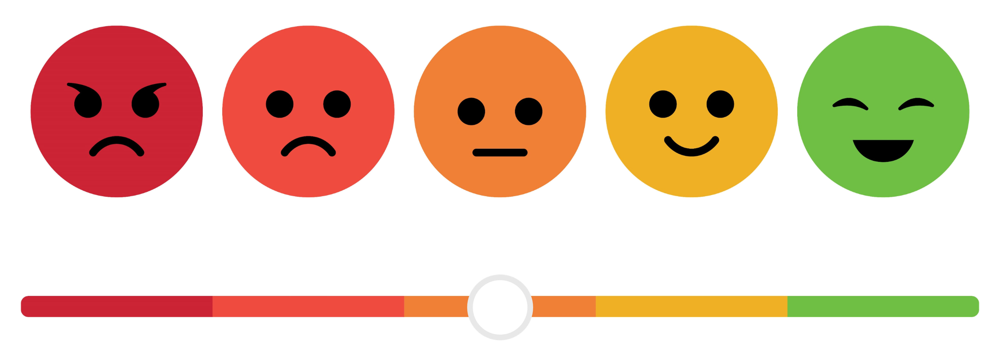

Simulating Likert-type questionnaire data with R

I have been working on multiple projects that involved analysing questionnaires with “Likert scales”, i.e. ordinal variables or pseudo-continuous variables obtained by summing all the ordinal items. Before engaging into the experiments proper, we should conduct robust power analyses, code testing, sanity checks, etc. to ensure that the data collection and analysis will be as smooth as possible. In several complex settings such as multivariate analyses or multilevel modelling, simulation can be a powerful tool to do these tasks by allowing to test intricate computations on synthetic data.
I found out (after the deed, of course) that several packages already existed that could have eased my work. The closest to what I coded here is the
LikertMakeRpackage, which is really comprehensive. Also check outlatent2likertfor a more item-based simulation approach. Note: this is not a standalone package because I don‚Äôt think the functions add a signficant improvement over those from the packages above, but I like the straightforward solutions I came up with, which is why I document them here. (I still added them to my (secret üëÄ) personal package though, to access them quickly without copy-pasting)
source("scripts/simulate_questionnaires.R")
source("scripts/plot_questionnaires.R")Score-based approach
My initial problem was to find a way to simulate a fixed number of bounded ordinal variables (questionnaire items) that sum to a given score. I wanted to be able to simulate the score distributions of a whole population on a multi-item questionnaire based on literature or assumptions, then simulate individual items making up the scale (which is the reverse process of more “item-based” approaches like latent2likert). This resulted in the simulate_items function1: given a score, a number of items, a minimum and a maximum value, it returns a vector of simulated items.
# Subject with a score of 32 on a 12-item questionnaire ranging from 1 to 5
simulate_items(score = 32, n_items = 12, min = 1, max = 5) [1] 1 4 2 2 3 2 3 3 2 1 4 5# Subject with a score of 45 on a 8-item questionnaire ranging from 1 to 7
simulate_items(score = 45, n_items = 8, min = 1, max = 7)[1] 7 7 2 4 6 6 7 6It can be mapped on a distribution to simulate the items for a whole sample of subjects.
n_subjects <- 1000
# Normal distribution of scores
df <-
tibble(
subject = 1:n_subjects,
score = rnorm(n_subjects, mean = 32, sd = 5) |> round()
) |>
rowwise() |>
mutate(item = list(simulate_items(score, 12, 1, 5))) |>
unnest_wider(item, names_sep = "_")
df |> head() |> display()| subject | score | item_1 | item_2 | item_3 | item_4 | item_5 | item_6 | item_7 | item_8 | item_9 | item_10 | item_11 | item_12 |
|---|---|---|---|---|---|---|---|---|---|---|---|---|---|
| 1 | 35 | 1 | 2 | 5 | 3 | 5 | 2 | 2 | 3 | 2 | 5 | 2 | 3 |
| 2 | 40 | 4 | 2 | 5 | 2 | 3 | 4 | 3 | 2 | 4 | 4 | 3 | 4 |
| 3 | 28 | 1 | 2 | 2 | 3 | 2 | 1 | 2 | 2 | 4 | 3 | 2 | 4 |
| 4 | 31 | 1 | 3 | 4 | 2 | 3 | 2 | 3 | 5 | 1 | 3 | 3 | 1 |
| 5 | 32 | 2 | 2 | 2 | 3 | 3 | 2 | 1 | 4 | 5 | 4 | 2 | 2 |
| 6 | 33 | 5 | 4 | 2 | 2 | 3 | 2 | 2 | 3 | 4 | 1 | 2 | 3 |
The simulation script (scripts/simulate_questionnaires.R) is heavily commented to explain the rationale behind the code and the choices made. The script is also designed to be easily adaptable to other questionnaires. scripts/plot_questionnaires.R contains two functions associated with the questionnaires to provide convenient plotting methods.
VVIQ and OSIVQ
This repository also contains code to simulate data from two mental imagery questionnaires I used often: the Vividness of Visual Imagery Questionnaire (VVIQ) and the Object-Spatial Imagery and Verbal Questionnaire.
simulate_vviq creates a data frame with a given number of subjects, simulating VVIQ scores and means for four groups defined in aphantasia literature (aphantasia, hypophantasia, typical imagery and hyperphantasia, see Wright et al., 2024). It can optionally simulate individual responses for all of the 16 items of the VVIQ for each subject (all responses of course summing to the simulated score).
df_vviq <- simulate_vviq(n_subjects = 1000, add_items = TRUE)
df_vviq |>
group_by(group) |>
slice(1) |>
display()| subject | group | score_vviq | mean_vviq | vviq_item_1 | vviq_item_2 | vviq_item_3 | vviq_item_4 | vviq_item_5 | vviq_item_6 | vviq_item_7 | vviq_item_8 | vviq_item_9 | vviq_item_10 | vviq_item_11 | vviq_item_12 | vviq_item_13 | vviq_item_14 | vviq_item_15 | vviq_item_16 |
|---|---|---|---|---|---|---|---|---|---|---|---|---|---|---|---|---|---|---|---|
| 130 | aph | 16 | 1.00 | 1 | 1 | 1 | 1 | 1 | 1 | 1 | 1 | 1 | 1 | 1 | 1 | 1 | 1 | 1 | 1 |
| 9 | hypo | 24 | 1.50 | 1 | 1 | 1 | 1 | 1 | 4 | 1 | 1 | 2 | 3 | 2 | 1 | 1 | 2 | 1 | 1 |
| 1 | typical | 56 | 3.50 | 2 | 3 | 2 | 3 | 3 | 3 | 4 | 4 | 5 | 1 | 5 | 5 | 3 | 4 | 4 | 5 |
| 5 | hyper | 78 | 4.88 | 5 | 5 | 5 | 5 | 5 | 5 | 5 | 5 | 4 | 5 | 5 | 5 | 5 | 5 | 4 | 5 |
simulate_osivq does the same for the OSIVQ, which comprises three sub-scales: Object, Spatial and Verbal. There are no conventional thresholds to define groups for this questionnaire.
df_osivq <- simulate_osivq(n_subjects = 1000, add_items = TRUE)
df_osivq |>
head() |>
display()| mean_object | mean_spatial | mean_verbal | score_object | score_spatial | score_verbal | osivq_item_o_1 | osivq_item_o_2 | osivq_item_o_3 | osivq_item_o_4 | osivq_item_o_5 | osivq_item_o_6 | osivq_item_o_7 | osivq_item_o_8 | osivq_item_o_9 | osivq_item_o_10 | osivq_item_o_11 | osivq_item_o_12 | osivq_item_o_13 | osivq_item_o_14 | osivq_item_o_15 | osivq_item_s_1 | osivq_item_s_2 | osivq_item_s_3 | osivq_item_s_4 | osivq_item_s_5 | osivq_item_s_6 | osivq_item_s_7 | osivq_item_s_8 | osivq_item_s_9 | osivq_item_s_10 | osivq_item_s_11 | osivq_item_s_12 | osivq_item_s_13 | osivq_item_s_14 | osivq_item_s_15 | osivq_item_v_1 | osivq_item_v_2 | osivq_item_v_3 | osivq_item_v_4 | osivq_item_v_5 | osivq_item_v_6 | osivq_item_v_7 | osivq_item_v_8 | osivq_item_v_9 | osivq_item_v_10 | osivq_item_v_11 | osivq_item_v_12 | osivq_item_v_13 | osivq_item_v_14 | osivq_item_v_15 |
|---|---|---|---|---|---|---|---|---|---|---|---|---|---|---|---|---|---|---|---|---|---|---|---|---|---|---|---|---|---|---|---|---|---|---|---|---|---|---|---|---|---|---|---|---|---|---|---|---|---|---|
| 3.50 | 3.15 | 2.00 | 52 | 47 | 30 | 4 | 4 | 4 | 5 | 5 | 5 | 2 | 5 | 2 | 4 | 2 | 3 | 2 | 1 | 4 | 5 | 1 | 3 | 3 | 2 | 3 | 5 | 1 | 4 | 4 | 4 | 5 | 2 | 3 | 2 | 2 | 2 | 2 | 4 | 1 | 2 | 2 | 2 | 2 | 2 | 2 | 1 | 1 | 4 | 1 |
| 2.56 | 2.40 | 2.87 | 38 | 35 | 43 | 4 | 4 | 2 | 2 | 3 | 2 | 2 | 2 | 3 | 3 | 1 | 1 | 1 | 3 | 5 | 1 | 4 | 2 | 3 | 5 | 1 | 3 | 1 | 1 | 2 | 2 | 4 | 1 | 2 | 3 | 3 | 1 | 1 | 1 | 4 | 5 | 5 | 2 | 5 | 2 | 5 | 2 | 2 | 3 | 2 |
| 3.59 | 1.90 | 2.93 | 53 | 28 | 43 | 5 | 2 | 4 | 2 | 4 | 3 | 5 | 2 | 3 | 2 | 5 | 4 | 4 | 3 | 5 | 1 | 3 | 1 | 1 | 2 | 1 | 3 | 1 | 3 | 2 | 1 | 2 | 2 | 3 | 2 | 2 | 3 | 3 | 3 | 5 | 3 | 2 | 3 | 5 | 3 | 4 | 2 | 1 | 3 | 1 |
| 2.90 | 4.38 | 2.64 | 43 | 65 | 39 | 3 | 4 | 4 | 3 | 3 | 4 | 1 | 3 | 4 | 1 | 4 | 3 | 2 | 1 | 3 | 5 | 5 | 5 | 5 | 5 | 4 | 5 | 3 | 4 | 3 | 5 | 5 | 2 | 5 | 4 | 3 | 3 | 4 | 1 | 2 | 4 | 1 | 2 | 4 | 1 | 5 | 3 | 2 | 2 | 2 |
| 3.37 | 2.34 | 3.13 | 50 | 35 | 46 | 2 | 5 | 2 | 4 | 4 | 4 | 2 | 2 | 3 | 3 | 5 | 2 | 5 | 2 | 5 | 3 | 1 | 1 | 2 | 3 | 3 | 1 | 2 | 4 | 4 | 4 | 3 | 2 | 1 | 1 | 2 | 4 | 3 | 3 | 3 | 5 | 2 | 3 | 3 | 3 | 1 | 3 | 3 | 3 | 5 |
| 3.67 | 2.05 | 3.23 | 54 | 30 | 48 | 2 | 5 | 4 | 4 | 3 | 3 | 4 | 1 | 5 | 3 | 4 | 5 | 4 | 4 | 3 | 1 | 3 | 4 | 2 | 3 | 2 | 4 | 1 | 1 | 2 | 1 | 1 | 2 | 2 | 1 | 2 | 1 | 3 | 5 | 5 | 4 | 4 | 3 | 2 | 2 | 5 | 3 | 3 | 4 | 2 |
Two plotting functions, plot_vviq and plot_osivq, are provided to plot the distributions of the scores and means of the VVIQ and OSIVQ, respectively. They can be called with the argument print = TRUE to display the plot directly in the console. In any case, they return a ggplot object that can be further customized.
vviq_scores <- df_vviq |> plot_vviq(var = "score", print = FALSE)
vviq_means <- df_vviq |> plot_vviq(var = "mean", print = FALSE) +
labs(title = NULL, y = NULL)
osivq_scores <- df_osivq |> plot_osivq(var = "score", print = FALSE)
osivq_means <- df_osivq |> plot_osivq(var = "mean", print = FALSE) +
labs(title = NULL, y = NULL)
# Laying out the four plots with the `patchwork` package
(vviq_scores + vviq_means) / (osivq_scores + osivq_means) +
plot_layout(guides = "collect")
I believe the structures presented in these scripts could be useful to anyone who needs to simulate Likert-type questionnaire data. The scripts are designed to be easily adaptable to other questionnaires and can be used as templates to build your own simulation scripts. I hope they will be useful to you! :cherry_blossom:
Note: this repository is a Quarto project endowed with a
renvR environment to ensure the stability of the packages used. The repository is based on this Quarto project template: you can find a quick tutorial to use this project structure and an in-depth explanation of its elements in the README of the template.
Footnotes
The function is close in purpose to the
makeItemsScalefrom theLikertMakeRpackage.↩︎